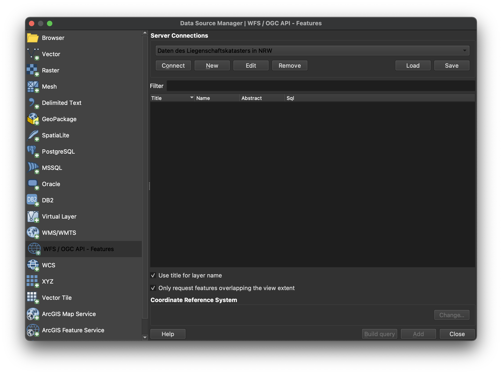
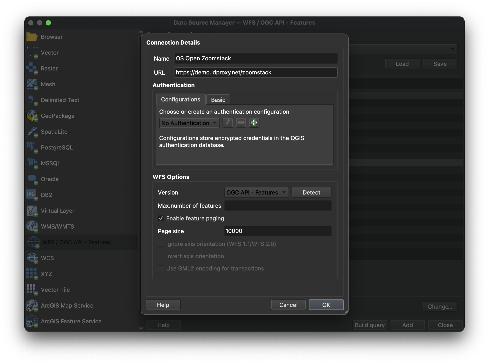

OGC API - Features¶
Público-alvo
Estudantes que estejam familiarizados com serviços web e APIs, e queiram ter uma visão geral da norma OGC API - Features
Objetivos de Aprendizagem
Após a conclusão do módulo, os estudantes serão capazes de:
- Explicar o que é a norma OGC API - Features
- Descrever o que pode ser feito com implementações da OGC API - Features
- Compreender os principais recursos oferecidos por implementações da OGC API - Features
- Comprender como recuperar uma descrição das capacidades de uma implementação da OGC API - Features
- Comprender como fazer pedidos a uma implementação da OGC API - Features
- Conseguir encontrar um endpoint da OGC API - Features e utilizá-lo através de um cliente
Introdução¶
A OGC API - Features é uma norma multi-parte que oferece a capacidade de criar, modificar e consultar dados espaciais na Web e especifica requisitos e recomendações para APIs que pretendam seguir uma forma padrão de partilhar dados do tipo entidade. A OGC API - Features - Parte 1: Core descreve as capacidades obrigatórias que todo o serviço que a implementa deve suportar e está limitada a acesso de leitura a dados espaciais. Capacidades adicionais, como suporte para diferentes Sistemas de Referência de Coordenadas (CRS, das siglas em inglês), consultas mais ricas e criação e modificação de dados, são especificadas em partes adicionais.
Note
Este módulo de tutorial não tem a intenção de substituir a própria norma OGC API - Features - Parte 1: Core. O tutorial foca-se intencionalmente num subconjunto de capacidades com o propósito de ser uma iniciação à utilização da norma. Consulte a norma OGC API - Features - Parte 1: Core para mais detalhes.
Antecedentes¶
História
Enquanto esteve em formato de rascunho e antes de fevereiro de 2019, a OGC API - Features - Parte 1: Core era referida como WFS3.0.
Versões
A versão 1.0.1 da OGC API - Features - Parte 1: Core, a versão 1.0.1 da OGC API - Features - Parte 2: Coordinate Reference Systems by Reference e a versão 1.0.1 da OGC API - Features - Parte 3: Filtering são as versões mais recentes atuais
Suite de testes
Suites de testes estão disponíveis para:
- OGC API - Features - Parte 1
- OGC API - Features - Parte 2
Todas as suites de testes estão disponíveis no Validador da OGC.
Implementações
As implementações podem ser encontradas na página de implementações.
Utilização¶
A norma fornece uma interface padrão para solicitar dados geoespaciais vetoriais, consistindo em entidades geográficas e as respetivas propriedades. O benefício disto é que as aplicações cliente podem solicitar dados de origem a múltiplas implementações da API e, em seguida, representar os dados para visualização ou processá-los ulteriormente como parte de um fluxo de trabalho. A norma permite que os dados sejam acedidos de forma consistente com outros dados. As propriedades de entidades codificadas com tipos de dados comuns, como strings de texto, data e hora, também podem ser acedidas de forma consistente.
- A OGC API - Features - Parte 1: Core especifica operações de descoberta e consulta que são implementadas usando o método HTTP GET. O suporte para métodos adicionais (em particular POST, PUT, DELETE, PATCH) será especificado em partes adicionais. As agências governamentais, organizações privadas e institutos académicos usam esta norma para publicar conjuntos de dados geoespaciais vetoriais de uma forma que facilite as organizações receptoras compilarem novos mapas ou conduzirem análises aos dados fornecidos. Na Parte 1, o Sistema de Referência de Coordenadas (SCR) padrão é o WGS 84 longitude/latitude, com ou sem altitude.
-
A OGC API - Features - Part 2: Coordinate Reference Systems By Reference estende a Parte 1 para suportar a apresentação de propriedades com valor geométrico num documento de resposta em SCR adicionais. Cada SCR suportado deve ser identificado por um URI, tal como:
http://www.opengis.net/def/crs/EPSG/0/4326. -
A OGC API - Features - Part 3: Filtering define parâmetros de consulta (
filter,filter-lang,filter-crs) para especificar critérios de filtragem num pedido a uma API e o recursoQueryablesque declara as propriedades dos dados numa coleção que podem ser usadas em expressões de filtro.
Para além das partes aprovadas acima, o Grupo de Trabalho (SWG, das siglas em inglês) da OGC API - Features está a trabalhar nos seguintes rascunhos:
-
Rascunho OGC API - Features - Part 4: Create, Replace, Update and Delete define o comportamento de uma API que permite que instâncias de recursos sejam adicionadas, substituídas, modificadas e/ou removidas de uma coleção.
-
Rascunho OGC API - Features - Part 5/OGC API - Common - Part 3: Schemas especifica como as entidades podem ser descritas por um esquema lógico e como esses esquemas são publicados numa implementação de API Web da OGC.
-
Rascunho OGC API - Features - Part 6: Property Selection especifica como a representação de um recurso pode ser reduzida a propriedades selecionadas do recurso usando um parâmetro de consulta.
-
Rascunho OGC API - Features - Part 7: Geometry Simplification especifica como a representação de geometria pode ser simplificada usando um parâmetro de consulta.
-
Rascunho OGC API - Features - Part 8: Sorting define parâmetros de consulta (sortby) para especificar critérios de ordenação num pedido a uma API e o recurso Sortables que declara as propriedades dos dados numa coleção que podem ser usadas em expressões de ordenação.
-
Rascunho OGC API - Features - Part 9: Text Search adiciona um parâmetro de consulta à suíte de normas da OGC API Features para suportar pesquisas de texto ou palavras-chave em campos de texto.
-
Rascunho OGC API - Features - Part 10: Search/Queries adiciona suporte para obter dinamicamente entidades de múltiplas coleções de uma vez.
Note
O resto deste tutorial focar-se-á na parte central da norma (core).
Relação com outras normas da OGC¶
- A Norma de Interface Web Feature Service da OGC (WFS): A norma WFS é mais adequada quando se trabalha com aplicações cliente que apenas suportam Serviços Web clássicos da OGC. Note também que a WFS adota a Linguagem de Marcação Geográfica (GML) como formato de dados padrão. Em contraste, a OGC API - Features inclui recomendações para suportar HTML e GeoJSON como codificações, quando prático. Implementações da OGC API - Features podem também opcionalmente suportar GML, bem como outros formatos vetoriais.
Visão geral dos Recursos¶
A OGC API - Features - Parte 1: Core define os recursos listados na tabela seguinte.
| Recurso | Método | Caminho | Finalidade |
|---|---|---|---|
| Página de aterragem | GET | / | Este é o recurso de nível superior, que serve como ponto de entrada. |
| Declaração de conformidade | GET | /conformance | Este recurso apresenta informação sobre a funcionalidade que está implementada pelo servidor. |
| Definição da API | GET | /api | Este recurso fornece metadados sobre a própria API. Note que o uso de /api no servidor é opcional e a definição da API pode estar alojada num servidor completamente separado. |
| Coleções de entidades | GET | /collections | Este recurso lista as coleções de entidades que são oferecidas através da API. |
| Coleção de entidades | GET | /collections/{collectionId} | Este recurso descreve a coleção de entidades identificada no caminho. |
| Entidades | GET | /collections/{collectionId}/items | Este recurso apresenta as entidades que estão contidas na coleção. |
| Entidade | GET | /collections/{collectionId}/items/{featureId} | Este recurso apresenta a entidade que está identificada no caminho |
Exemplo¶
Este servidor de demonstração publica dados geoespaciais vetoriais através de uma interface que está em conformidade com a OGC API - Features.
Um exemplo de pedido que pode ser usado para recuperar dados da coleção de Pontos de Interesse de Portugal é https://demo.pygeoapi.io/master/collections/ogr_gpkg_poi/items?f=html
Note que a resposta ao pedido é HTML neste caso.
Alternativamente, os mesmos dados podem ser recuperados em formato GeoJSON, através do pedido https://demo.pygeoapi.io/master/collections/ogr_gpkg_poi/items?f=json
Uma aplicação cliente pode, em seguida, recuperar o documento GeoJSON e exibí-lo ou processá-lo.
Recursos¶
Esta secção fornece informação básica sobre os tipos de recursos que a OGC API - Features oferece.
Cada recurso fornece ligações para recursos relacionados. Isto permite a
uma aplicação cliente navegar pelos recursos, desde a Página de Aterragem
até às entidades individuais. O servidor identifica a
relação entre um recurso e outros recursos ligados através de um
tipo de relação de ligação, representado pelo atributo rel. Os tipos
de relação de ligação usados por implementações da OGC API - Features -
Part 1: Core podem ser encontrados na Secção
5.2
da norma.
Página de Aterragem¶
A página de Aterragem é o recurso de nível superior que serve como ponto de entrada. Uma aplicação cliente precisa de conhecer a localização da Página de Aterragem do servidor. A partir da Página de Aterragem, a aplicação cliente pode então recuperar ligações para a Seclaração de Conformidade, para os caminhos de Coleção e para a Definição da API. Um exemplo de Página de Aterragem está em https://demo.ldproxy.net/daraa?f=json
A ligação à Definição da API é identificada através dos tipos
de relação de ligação service-desc e service-doc.
A ligação à Declaração de Conformidade é identificada através do tipo
de relação de ligação conformance.
A ligação às Coleções é identificada através do tipo de relação de
ligação data.
Um excerto da Página de Aterragem de um servidor de demonstração é apresentado abaixo.
{
"title": "Daraa",
"description": "This is a test dataset used in the Open Portrayal Framework thread in the OGC Testbed-15 as well as the OGC Vector Tiles Pilot Phase 2. The data is based on OpenStreetMap data from the region of Daraa, Syria, converted to the Topographic Data Store schema of NGA.",
"attribution": "US National Geospatial Intelligence Agency (NGA)",
"links": [
{
"rel": "self",
"type": "application/json",
"title": "This document",
"href": "https://demo.ldproxy.net/daraa?f=json"
},
{
"rel": "service-desc",
"type": "application/vnd.oai.openapi+json;version=3.0",
"title": "Definition of the API in OpenAPI 3.0",
"href": "https://demo.ldproxy.net/daraa/api?f=json"
},
{
"rel": "conformance",
"title": "OGC API conformance classes implemented by this server",
"href": "https://demo.ldproxy.net/daraa/conformance"
},
{
"rel": "data",
"title": "Access the data",
"href": "https://demo.ldproxy.net/daraa/collections"
}
]
}
Declarações de Conformidade¶
Uma implementação da OGC API - Features descreve as capacidades que suporta declarando que classes de conformidade implementa. A declaração de Conformidade afirma as classes de conformidade de normas ou especificações comunitárias, identificadas por um URI, às quais a API está em conformidade. Os clientes podem então utilizar esta informação, embora não sejam obrigados a fazê-lo. Ao aceder à declaração de Conformidade usando HTTP GET, devolve a lista de URIs das classes de conformidade implementadas pelo servidor. As classes de conformidade descrevem o comportamento que um servidor deve implementar para cumprirem um ou mais conjuntos de requisitos especificados numa norma.
Abaixo está um excerto da resposta ao pedido https://demo.ldproxy.net/daraa/conformance?f=json
Note que o exemplo mostra um tipo de relação de ligação chamado alternate
que identifica uma forma de recuperar uma representação alternativa da
informação fornecida pelo recurso. Neste caso, a relação de ligação
alternate está a referenciar uma representação HTML da declaração de conformidade.
{
"links": [
{
"rel": "alternate",
"type": "text/html",
"title": "This document as HTML",
"href": "https://demo.ldproxy.net/daraa/conformance?f=html"
},
{
"rel": "self",
"type": "application/json",
"title": "This document",
"href": "https://demo.ldproxy.net/daraa/conformance?f=json"
}
]
"conformsTo" : ["http://www.opengis.net/spec/ogcapi-features-1/1.0/conf/core", "http://www.opengis.net/spec/ogcapi-features-1/1.0/conf/geojson", "http://www.opengis.net/spec/ogcapi-features-1/1.0/conf/html", "http://www.opengis.net/spec/ogcapi-features-1/1.0/conf/oas30", "http://www.opengis.net/spec/ogcapi-features-2/1.0/conf/crs", "http://www.opengis.net/spec/ogcapi-features-3/0.0/conf/features-filter", "http://www.opengis.net/spec/ogcapi-features-3/0.0/conf/filter", "http://www.opengis.net/spec/ogcapi-features-3/0.0/conf/queryables", "http://www.opengis.net/spec/ogcapi-features-3/0.0/conf/queryables-query-parameters"]
}
Definição da API¶
A Definição da API descreve as capacidades do servidor. Pode ser usada por programadores para compreender a API, por clientes de software para se ligarem ao servidor, ou por ferramentas de desenvolvimento para apoiar a implementação de servidores e clientes. Ao aceder à definição da API usando HTTP GET, é devolvida uma descrição da API.
Existem classes de conformidade para fornecer a definição da API usando Open API. Alguns servidores também devolvem uma representação legível por humanos da definição em HTML, usando ferramentas como Redoc ou Swagger.
Este é um excerto de uma Definição de API, que usa Open API 3:
{
"openapi" : "3.0.3",
"info" : {
"title" : "Daraa",
"description" : "This is a test dataset used in the Open Portrayal Framework thread in the OGC Testbed-15 as well as the OGC Vector Tiles Pilot Phase 2. The data is based on OpenStreetMap data from the region of Daraa, Syria, converted to the Topographic Data Store schema of NGA.\n\n_Note: This API is based on API building blocks (e.g., operations, query parameters, or headers) specified in OGC API Standards or drafts of those standards. For more information about OGC API Standards, see [https://ogcapi.ogc.org](https://ogcapi.ogc.org/). Some building blocks of this API can be preliminary and may change in this API, because they are not yet based on a stable specification. The maturity is stated for each building block._",
"contact" : {
"name" : "interactive instruments GmbH",
"email" : "mail@interactive-instruments.de"
},
"license" : {
"name" : "The dataset was provided by the US National Geospatial Intelligence Agency (NGA) for development, testing and demonstrations in initiatives of the Open Geospatial Consortium (OGC). For any reuse of the data outside this API, please contact NGA."
},
"version" : "1.0.0"
},
"servers" : [ {
"url" : "https://demo.ldproxy.net/daraa"
} ],
"tags" : [ ],
"paths" : {
"/" : {
"get" : {
"tags" : [ "Capabilities" ],
"summary" : "landing page",
"description" : "The landing page provides links to the API definition (link relations `service-desc` and `service-doc`), the Conformance declaration (path `/conformance`, link relation `conformance`), and other resources in the API.\n\n_Maturity: `STABLE`_",
"externalDocs" : {
"description" : "The specification that describes this operation: OGC API - Features - Part 1: Core",
"url" : "https://docs.ogc.org/is/17-069r4/17-069r4.html"
},
"operationId" : "getLandingPage",
"parameters" : [ {
"$ref" : "#/components/parameters/fCommon"
} ],
"responses" : {
"200" : {
"description" : "The operation was executed successfully.",
"content" : {
"application/json" : {
"schema" : {
"$ref" : "#/components/schemas/LandingPage"
}
},
"text/html" : {
"schema" : {
"$ref" : "#/components/schemas/htmlSchema"
}
}
}
},
"400" : {
"description" : "Bad Request"
},
"406" : {
"description" : "Not Acceptable"
},
"500" : {
"description" : "Server Error"
}
},
"x-maturity" : "STABLE_OGC"
}
},
Note
O uso de /api no servidor é opcional e a Definição da API pode estar alojada num caminho diferente ou num servidor completamente separado.
Coleções de Entidades¶
Os dados oferecidos através de uma implementação da OGC API - Features - Parte 1:
Core estão organizados numa ou mais coleções de entidades. O
recurso Collections fornece informação sobre e acesso à
lista de coleções.
Para cada coleção, existe uma ligação à descrição detalhada da coleção (representada pelo caminho /collections/{collectionId} e relação de ligação self).
Para cada coleção, existe uma ligação às entidades na coleção (representada pelo caminho /collections/{collectionId}/items e relação de ligação items) e outra informação sobre a coleção. A seguinte informação é fornecida pelo servidor para descrever cada coleção:
- Um identificador local para a coleção que é único para o conjunto de dados
- Uma lista de sistemas de referência de coordenadas (SCR) em que as geometrias podem ser devolvidas pelo servidor
- Um título e descrição opcionais para a coleção
- Uma extensão opcional que pode ser usada para fornecer uma indicação da extensão espacial e temporal da coleção
- Um indicador opcional sobre o tipo dos itens na coleção
(o valor padrão, se o indicador não for fornecido, é
feature).
Abaixo está um excerto da resposta ao pedido https://demo.ldproxy.net/daraa/collections?f=json
{
"title": "Daraa",
"description": "This is a test dataset used in the Open Portrayal Framework thread in the OGC Testbed-15 as well as the OGC Vector Tiles Pilot Phase 2. The data is based on OpenStreetMap data from the region of Daraa, Syria, converted to the Topographic Data Store schema of NGA.",
"collections": [
{
"title": "Aeronautic (Curves)",
"description": "Aeronautical Facilities: Information about an area specifically designed and constructed for landing, accommodating, and launching military and/or civilian aircraft, rockets, missiles and/or spacecraft.<br/>Aeronautical Aids to Navigation: Information about electronic equipment, housings, and utilities that provide positional information for direction or otherwise assisting in the navigation of airborne aircraft.",
"id": "AeronauticCrv",
"extent": {
"spatial": {
"bbox": [
[36.395158, 32.693301, 36.430814, 32.717333]
],
"crs": "http://www.opengis.net/def/crs/OGC/1.3/CRS84"
},
"storageCrs": "http://www.opengis.net/def/crs/OGC/1.3/CRS84",
"links": [
{
"rel": "items",
"type": "application/geo+json",
"title": "Access the features in the collection 'Aeronautic (Curves)' as GeoJSON",
"href": "https://demo.ldproxy.net/daraa/collections/AeronauticCrv/items?f=json"
},
{
"rel": "self",
"title": "The 'Aeronautic (Curves)' feature collection",
"href": "https://demo.ldproxy.net/daraa/collections/AeronauticCrv"
}
]
}
},
{
"title": "Other (Points)",
"id": "o2s_p",
"extent": {
"spatial": {
"bbox": [
[35.939604, 32.544963, 36.443695, 32.984648]
],
"crs": "http://www.opengis.net/def/crs/OGC/1.3/CRS84"
}
},
"storageCrs": "http://www.opengis.net/def/crs/OGC/1.3/CRS84",
"links": [
{
"rel": "items",
"type": "application/geo+json",
"title": "Access the features in the collection 'Other (Points)' as GeoJSON",
"href": "https://demo.ldproxy.net/daraa/collections/o2s_p/items?f=json"
},
{
"rel": "self",
"title": "The 'Other (Points)' feature collection",
"href": "https://demo.ldproxy.net/daraa/collections/o2s_p"
}
],
}
]
Coleção de Entidades¶
O recurso Collection fornece informação detalhada sobre a coleção identificada num pedido.
Abaixo está um excerto da resposta ao pedido https://demo.ldproxy.net/daraa/collections/AeronauticCrv?f=json
{
"title": "Aeronautic (Curves)",
"description": "Aeronautical Facilities: Information about an area specifically designed and constructed for landing, accommodating, and launching military and/or civilian aircraft, rockets, missiles and/or spacecraft.<br/>Aeronautical Aids to Navigation: Information about electronic equipment, housings, and utilities that provide positional information for direction or otherwise assisting in the navigation of airborne aircraft.",
"id": "AeronauticCrv",
"extent": {
"spatial": {
"bbox": [
[36.395158, 32.693301, 36.430814, 32.717333]
],
"crs": "http://www.opengis.net/def/crs/OGC/1.3/CRS84"
},
"temporal": {
"interval": [
[
"2011-03-16T14:51:12Z",
"2015-09-11T19:15:35Z"
]
],
"trs": "http://www.opengis.net/def/uom/ISO-8601/0/Gregorian"
}
},
"itemType": "feature",
"crs": [
"http://www.opengis.net/def/crs/OGC/1.3/CRS84",
"http://www.opengis.net/def/crs/EPSG/0/3395",
"http://www.opengis.net/def/crs/EPSG/0/3857",
"http://www.opengis.net/def/crs/EPSG/0/4326"
],
"storageCrs": "http://www.opengis.net/def/crs/OGC/1.3/CRS84",
"links": [
{
"rel": "items",
"type": "application/geo+json",
"title": "Access the features in the collection 'Aeronautic (Curves)' as GeoJSON",
"href": "https://demo.ldproxy.net/daraa/collections/AeronauticCrv/items?f=json"
}
{
"rel": "self",
"type": "application/json",
"title": "This document",
"href": "https://demo.ldproxy.net/daraa/collections/AeronauticCrv?f=json"
}
],
}
Entidades¶
O recurso de Entidades devolve um documento que consiste em entidades contidas pela coleção identificada num pedido. As entidades incluídas na resposta são determinadas pelo servidor com base nos parâmetros de consulta do pedido. Para suportar o acesso a coleções maiores sem sobrecarregar o cliente, a API suporta acesso por página com ligações para a página seguinte, se mais entidades forem selecionadas do que o tamanho da página.
Abaixo está um excerto da resposta ao pedido https://demo.ldproxy.net/daraa/collections/AeronauticCrv/items?f=json
{
"type": "FeatureCollection",
"numberReturned": 10,
"numberMatched": 20,
"timeStamp": "2023-11-29T08:38:10Z",
"features": [
{
"type": "Feature",
"id": 1,
"geometry": {
"type": "MultiLineString",
"coordinates": [[[36.4270030, 32.7114540],[36.4251990, 32.7137030]]]
},
"properties": {
"F_CODE": "GB075",
"ZI001_SDV": "2011-03-16T14:51:12Z",
"UFI": "2d008c34-4458-4226-b335-cf903d261ce9",
"ZI005_FNA": "No Information",
"FCSUBTYPE": 100454
}
},
{
"type": "Feature",
"id": 2,
"geometry": {
"type": "MultiLineString",
"coordinates": [
[[ 36.4009090, 32.7000770 ],
[ 36.4031330, 32.7013330 ],
[ 36.4208880, 32.7113020 ],
[ 36.4231110, 32.7125400 ],
[ 36.4251990, 32.7137030 ],
[ 36.4252970, 32.7137690 ]
]
]
},
"properties": {
"F_CODE": "GB075",
"ZI001_SDV": "2015-09-11T19:15:35Z",
"UFI": "1257bf27-3f91-461d-8a3b-a95af2ea1f5a",
"ZI005_FNA": "No Information",
"FCSUBTYPE": 100454
}
}]
}
Note que este documento é um documento GeoJSON válido.
Podem ser usados parâmetros adicionais para selecionar apenas um subconjunto das entidades na coleção.
Um parâmetro bbox ou datetime pode ser usado para selecionar apenas o subconjunto das entidades na coleção que se encontram dentro da caixa delimitadora especificada pelo parâmetro bbox ou do intervalo de tempo especificado pelo parâmetro datetime. Um exemplo de pedido que usa o parâmetro bbox é https://demo.ldproxy.net/daraa/collections/VegetationSrf/items?f=json&bbox=36.0832432,32.599852,36.1168237,32.6283697
Note
O efeito do parâmetro bbox pode ser facilmente observado ao comparar a resposta HTML ao aplicar o parâmetro bbox, com a resposta sem qualquer parâmetro bbox.
O parâmetro limit pode ser usado para controlar o tamanho da página especificando o número máximo de entidades que devem ser devolvidas na resposta. Um exemplo de pedido que usa o parâmetro limit é https://demo.ldproxy.net/daraa/collections/AeronauticCrv/items?f=json&limit=2
Cada página pode incluir informação sobre o número de entidades selecionadas e
devolvidas (numberMatched e numberReturned) bem como
ligações para suportar paginação (relação de ligação next).
Entidade¶
O recurso de Entidade é usado para recuperar uma entidade individual, a sua
representação geométrica e outras propriedades. No exemplo abaixo, a
entidade com um id de 1 é recuperada. A resposta é obtida
através do pedido
https://demo.ldproxy.net/daraa/collections/AeronauticCrv/items/1?f=json
{
"type": "Feature",
"id": 1,
"geometry": {
"type": "MultiLineString",
"coordinates": [
[
[
36.4270030,
32.7114540
],
[
36.4251990,
32.7137030
]
]
]
},
"properties": {
"F_CODE": "GB075",
"ZI001_SDV": "2011-03-16T14:51:12Z",
"UFI": "2d008c34-4458-4226-b335-cf903d261ce9",
"ZI005_FNA": "No Information",
"FCSUBTYPE": 100454
},
"links": [
{
"href": "https://demo.ldproxy.net/daraa/collections/AeronauticCrv/items/1?f=json",
"rel": "self",
"type": "application/geo+json",
"title": "This document"
},
{
"href": "https://demo.ldproxy.net/daraa/collections/AeronauticCrv/items/1?f=jsonfgc",
"rel": "alternate",
"type": "application/vnd.ogc.fg+json;compatibility=geojson",
"title": "This document as JSON-FG (GeoJSON Compatibility Mode)"
},
{
"href": "https://demo.ldproxy.net/daraa/collections/AeronauticCrv/items/1?f=csv",
"rel": "alternate",
"type": "text/csv",
"title": "This document as CSV"
},
{
"href": "https://demo.ldproxy.net/daraa/collections/AeronauticCrv/items/1?f=fgb",
"rel": "alternate",
"type": "application/flatgeobuf",
"title": "This document as FlatGeobuf"
},
{
"href": "https://demo.ldproxy.net/daraa/collections/AeronauticCrv/items/1?f=html",
"rel": "alternate",
"type": "text/html",
"title": "This document as HTML"
},
{
"href": "https://demo.ldproxy.net/daraa/collections/AeronauticCrv/items/1?f=jsonfg",
"rel": "alternate",
"type": "application/vnd.ogc.fg+json",
"title": "This document as JSON-FG"
},
{
"href": "https://demo.ldproxy.net/daraa/collections/AeronauticCrv?f=json",
"rel": "collection",
"type": "application/json",
"title": "The collection the feature belongs to"
}
]
}
Utilização com clientes¶
Nesta workshop, abordaremos diferentes ferramentas cliente para a OGC API - Features: duas bibliotecas JavaScript (Leaflet e OpenLayers), um SIG Desktop (QGIS) e uma biblioteca C++ (GDAL).
Leaflet¶
O Leaflet pode ler GeoJSON nativamente, a partir de um ficheiro ou de uma API. Como a OGC API - Features pode expor dados em formato GeoJSON usando f=json no pedido, a resposta pode ser lida diretamente no LeafLet usando o seguinte código:
fetch('https://demo.ldproxy.net/zoomstack/collections/airports/items?limit=100', {
headers: {
'Accept': 'application/geo+json'
}
}).then(response => response.json())
.then(data => {
L.geoJSON(data).addTo(map);
});
O Leaflet também tem um plugin externo que permite que a OGC API - Features seja usada nativamente:
// Import following in <head> tag
// <script src='https://unpkg.com/leaflet-featuregroup-ogcapi@0.1.0/Leaflet.FeatureGroup.OGCAPI.js'></script>
var overlay = L.featureGroup.ogcApi("https://demo.ldproxy.net/zoomstack/", {
collection: "airports",
limit: 500,
padding: 0.2
}).addTo(map);
OpenLayers¶
O OpenLayers também lê GeoJSON de forma nativa. Uma resposta da OGC API - Features pode ser consumida usando o seguinte código:
fetch('https://demo.ldproxy.net/zoomstack/collections/airports/items?limit=100', {
headers: {
'Accept': 'application/geo+json'
}
}).then(response => response.json())
.then(data => {
map.addLayer(new ol.layer.Vector({
source: new ol.source.Vector({
features: new ol.format.GeoJSON().readFeatures(data, { featureProjection: 'EPSG:3857' }),
attributions: 'Contains OS data © Crown copyright and database right 2021.'
})
}));
});
QGIS¶
O QGIS suporta a OGC API - Features e WFS usando o mesmo fornecedor de camadas vetorial. Abra o Gestor de Origens de Dados e vá para a aba "WFS / OGC API Features".

Forneça as informações de ligação. A URL é a URL do recurso de Página de Aterragem da OGC API (neste caso https://demo.ldproxy.net/zoomstack). Certifique-se de que "Ativar paginação de entidades" está seleccionado.

Note que, se uma coleção tiver milhões de entidades e a vista do mapa cobrir a extensão da coleção, o QGIS vai tentar carregar todas as entidades. Para evitar isso, pode, por exemplo, restringir o intervalo de zoom em que a camada deve ser visível.

GDAL¶
O GDAL suporta a OGC API - Features como formato vetorial central. O exemplo abaixo demonstra a utilização via ogrinfo contra um endpoint da OGC API - Features:
ogrinfo OAPIF:https://demo.ldproxy.net/zoomstack
INFO: Open of `OAPIF:https://demo.ldproxy.net/zoomstack'
using driver `OAPIF' successful.
1: airports (title: Airports) (Point)
2: boundaries (title: Boundaries) (Line String)
3: contours (title: Contours) (Line String)
4: district_buildings (title: District Buildings) (Polygon)
5: etl (title: ETL) (Line String)
6: foreshore (title: Foreshore) (Polygon)
7: greenspace (title: Greenspace) (Polygon)
8: land (title: Land) (Polygon)
9: local_buildings (title: Local Buildings) (Polygon)
10: names (title: Names) (Point)
11: national_parks (title: National Parks) (Polygon)
12: rail (title: Rail) (Line String)
13: railway_stations (title: RailwayStation) (Point)
14: roads_local (title: Local Roads) (Line String)
15: roads_national (title: National Roads) (Line String)
16: roads_regional (title: Regional Roads) (Line String)
17: sites (title: Sites) (Multi Polygon)
18: surfacewater (title: Surface Water) (Polygon)
19: urban_areas (title: Urban Areas) (Polygon)
20: waterlines (title: Waterlines) (Line String)
21: woodland (title: Woodland) (Polygon)
GeoJSON¶
A Classe de Requisitos GeoJSON da OGC API - Features especifica uma codificação baseada em GeoJSON com base na RFC7946. Dada a onipresença do GeoJSON, existem inúmeras ferramentas para validar, processar e decodificar/codificar GeoJSON, tornando a OGC API - Features GeoJSON fácil de incluir em pipelines de processamento de dados. A OGC API - Features inclui o JSON Schema para a representação GeoJSON e, portanto, pode ser usado para validação em tempo de execução ou offline de cargas de dados. Aplicações baseadas na OGC API - Features GeoJSON podem estender e restringir o esquema de acordo com fluxos de trabalho específicos de domínio.
Resumo¶
A OGC API - Features fornece funcionalidade para trabalhar com dados vetoriais na Web. Este aprofundamento proporcionou uma visão geral da norma e dos vários Recursos e endpoints que são suportados, bem como exemplos de como aceder usando diferentes clientes.